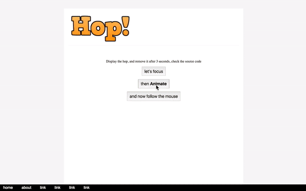

a jQuery plugin to highlight important sections of your site, inspired by Google Inbox. it will create a circle arround a specific section, and overlay the whole page.

Get Started
Simply call the hop() method on your jQuery instance.
$.hop(options: Options): jQueryInstance
return the current jQuery instance
$('.target-element').
hop();
Note: if multiple elements selected, Hop will choose the first one.
Options
The following options are available if you want to adjust it,
color: string
The overlay color, any valid html color
radius: number
The radius of the circle, must be a positive number
opacity: number
the overlay opacity, 0 > opacity < 1
borderWidth: number
the width of the border arround the hop
borderColor: string
the border color, any valid html color
Examples
Check the examples folder
API
After calling the hop() plugin on a jQuery element, you can get the Hop instance in $(el).data('hop')
Usage example
$('.logo').
hop();
var hopApi = $('.logo
'
).data('hop');
// move the hope by (20px, 10px) from the current position
hopApi.move(20, 10,
true);
// remove it
hopApi.remove();
Note: if you want to change the radius, color or border properties, you can recall the plugin with the new options
$('.logo').
hop();
// increase the radius
$('.logo').
hop({radius: 250});
Hop class methods interface
remove() : Hop
Remove and hide the hop, return the current Hop instance
move(left, top, relative? = false): Hop
Move the current hop horizantally or vertically, return the current Hop instance
| param | description | example |
|---|---|---|
| left |
number|string move the hop to the right, pass a negative value to move it to the left |
0, '50%' only if relative is false
|
| top |
number|stringmove the hop to the bottom, pass a negative value to move it to the top |
'10%' only if relative is false
|
| relative |
boolean default to false, if true, it will move it from the current location, otherwise it
will be relative to the current document |
Note: if you want to move the hop to another element, call the plugin on the new element
$('.logo').
hop();
// move the hop to the footer
$('.footer').
hop();
To Apply animation
just put this css rule in your document
.hop-outer { .2
s linear all; }
off course you can customize it as per your need.
Roadmap
- Generate TypeScript
dtsfiles - Provide a jQuery less version
- Improve current API
- Add more examples
Contribution
This plugin is written in TypeScript. I will update the contribution guide the soonest